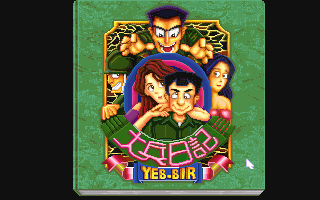
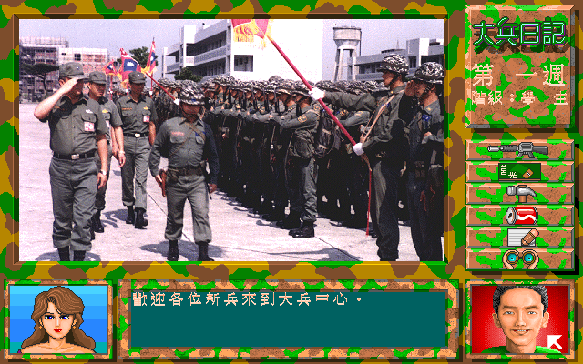

名稱：大兵日記 (中文版) 簡介：新藝1994年出品的養成遊戲 [待補]。

備註：本版為光碟版（內含磁片版執行檔） 保護：光碟版無保護，磁片版為圖案密碼，破解碼： BSDA.EXE, BSDB.EXE 3B 46 F8 75 03 -- -- -- 90 90 或 74 03 E9 72 05 90 90 -- -- -- 備註：磁片版和光碟版只差在執行檔，後者較新，尚不清楚其差異。 備註：磁片版安裝時若一直要求放入磁片，可進行下列修改，或將檔案全部拷入安裝目錄： INSTALL.EXE 74 39 8B 46 E6 EB -- -- -- -- 備註：DosBox必須修改為machine=svga_et4000，否則進入遊戲會當死。